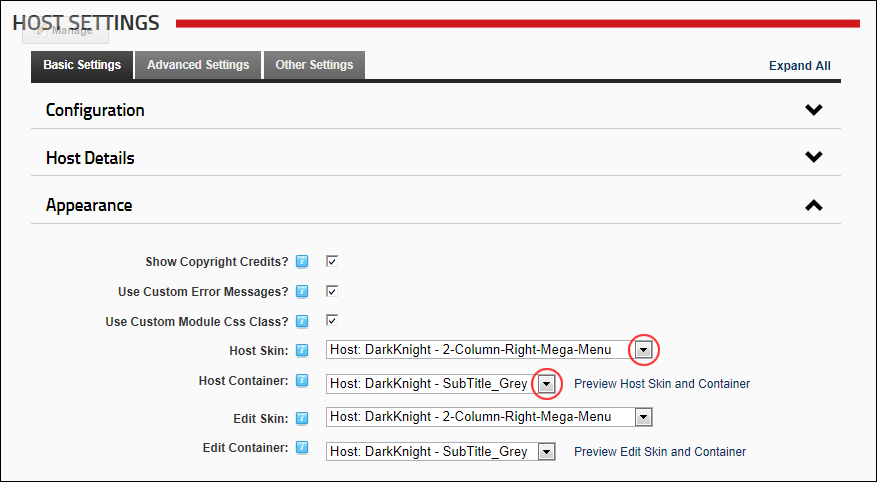

Setting the Host Skin and Container
How to set the skin and container to be applied to the Host Console pages across all sites within this DNN installation.
- Navigate to Host >
 Host Settings.
Host Settings.
- Select the Basic Settings tab.
- Expand the Appearance section.
- At Host Skin, select the skin for all Host Console pages from the drop down list.
- At Host Container, select the container for all Host Console pages from the drop down list.

- Optional. Click the Preview Host Skin and Container button to preview the selected skin and container in a new Web browser.
-
Click the Update button.